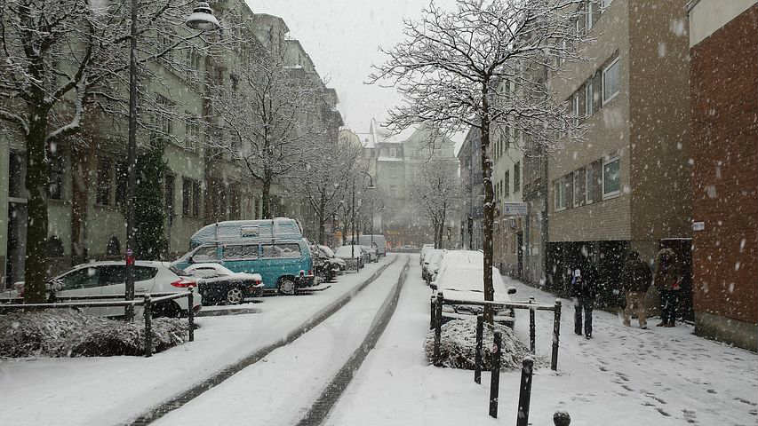
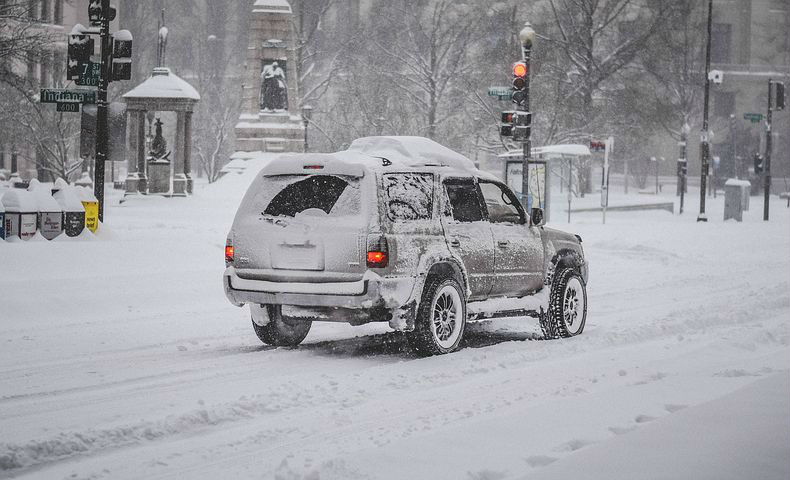
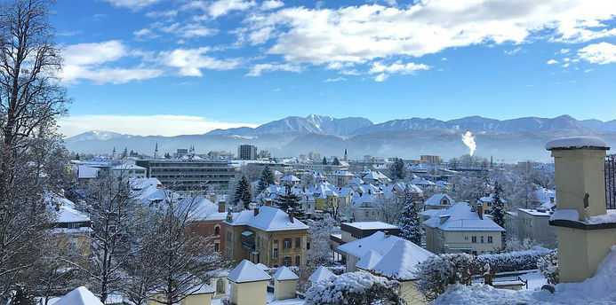
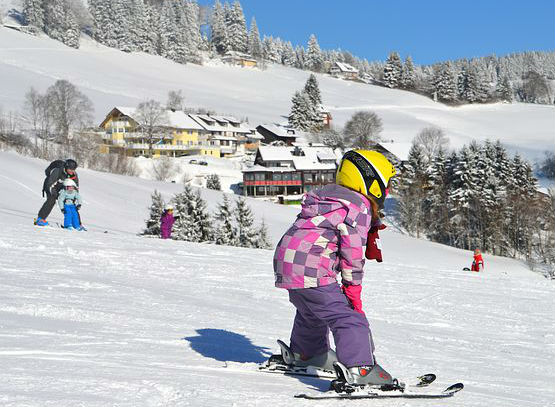
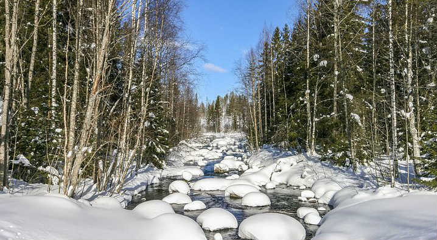

Bellmont Street covered in snow in Franklin, 2017-2018.

Car driving down Main Street in Franklin, 2017-2018.

Aerial view of Franklin in the winter, 2017-2018.

Grandaughter of Mrs. Southwick at Cali Mountain Ski Resort out side of Franlin, 2017-2018.Geese strolling through Franklin's City Park, 2017-2018.

Picture taken by Mr. Morgan, snow shoeing near Cali Mountain Ski Resort, 2017-2018.